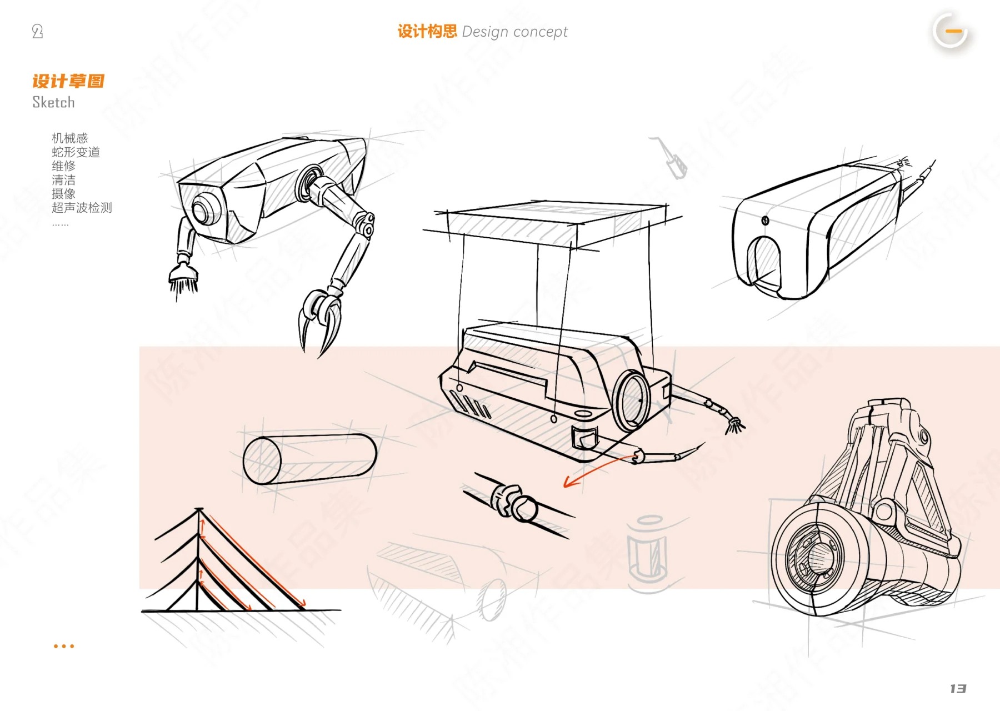

产品设计 · 交互体验 · AIGC 探索
你好，欢迎来我的设计工作台✳
我是陈湘，中南大学设计学硕士在读。
在这里翻翻作品，也看看想法如何发生。
CHEN’S ROOM 一个正在发生想法的房间
移动鼠标看看，点一件物品坐下来。
屏幕里的作品
打开一个文件夹，发现一些想法。
分类作品书架认真做一点
有用的设计。陈湘 / 关于我 ↗
毛毡留言板
唱片机 · 歌单待放入
NOTES & ITERATIONS № 03好想法，
都有草稿。
CMF让想法触手可及色彩与材质样本 ↗
CXTO: NEXT OPPORTUNITY都有草稿。

速写本 · 观察 / 草图 / 迭代 ↗简历与联系 ↗
打字机 · 写张便签